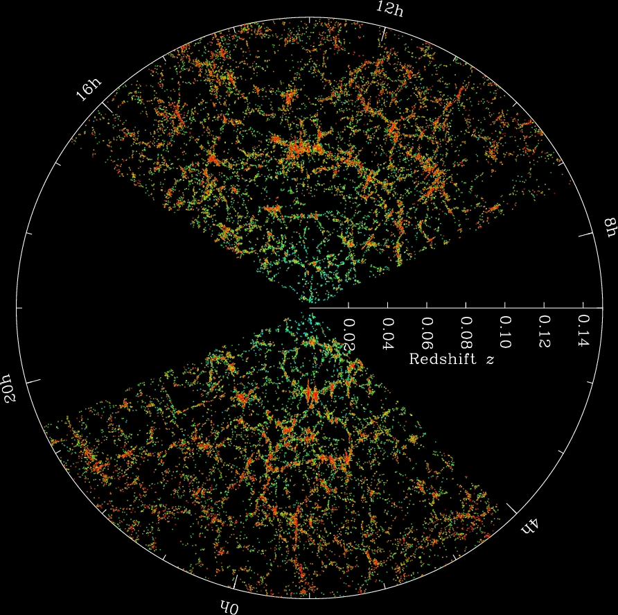
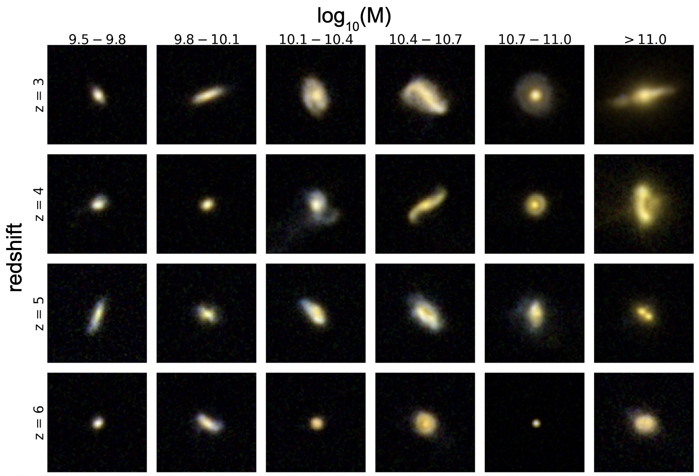
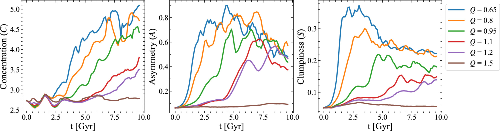
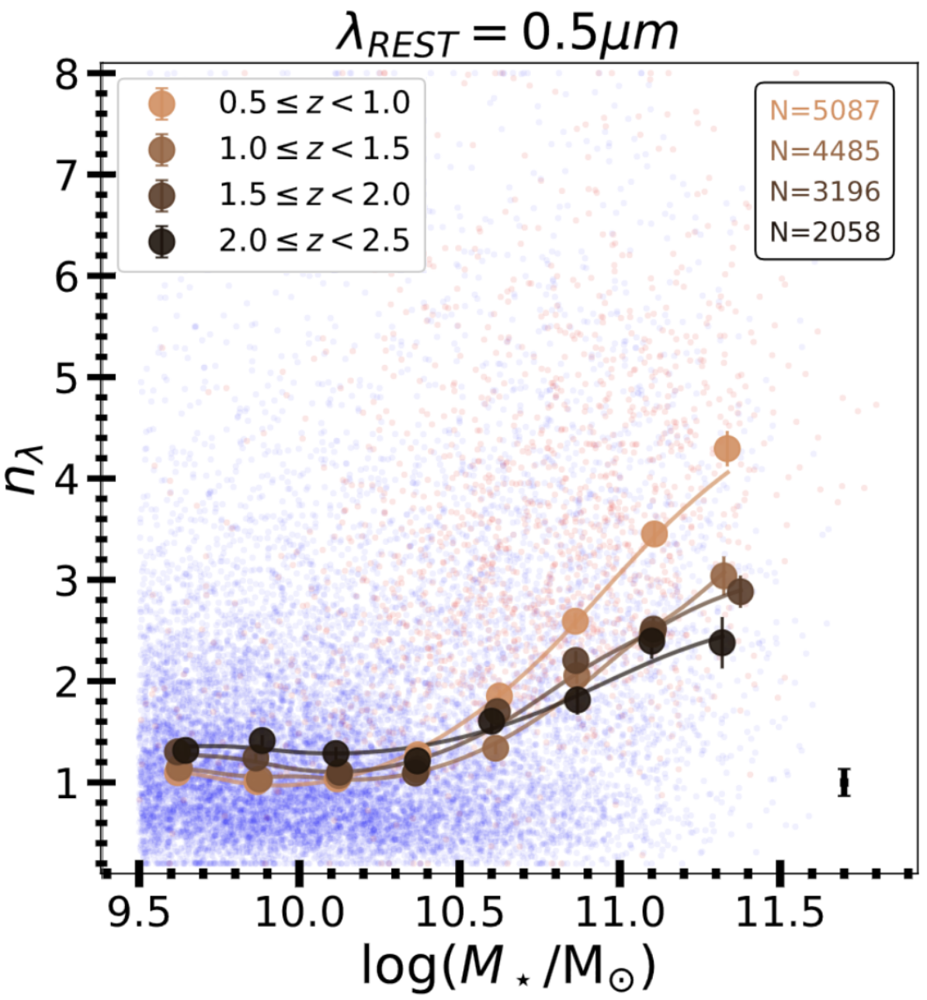
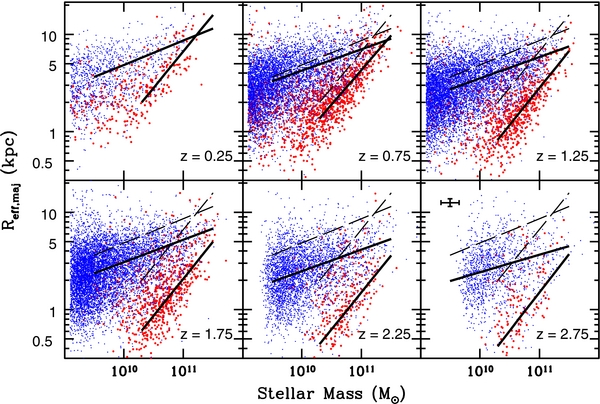
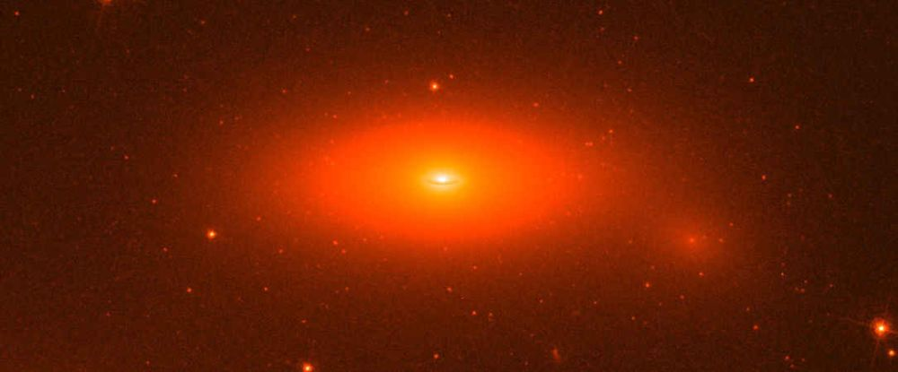
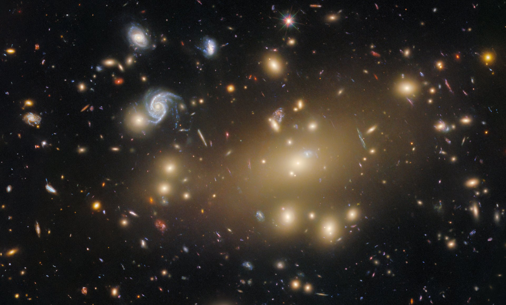
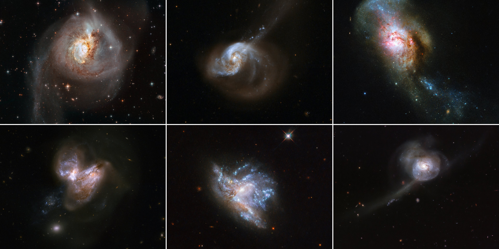
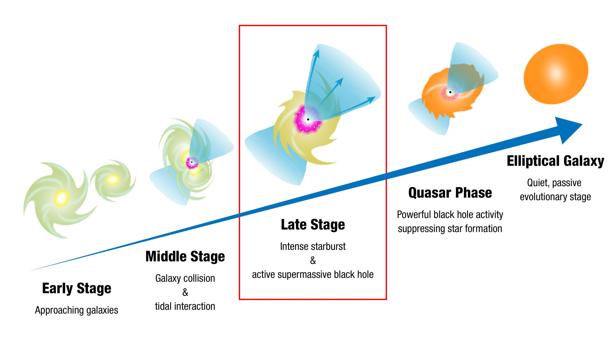

# The Evolutionary Path of Galaxies - <span class="fragment">We have some idea now of what galaxies look like in general:</span> - <span class="fragment">Their main types (elliptical, spiral, irregular)</span> - <span class="fragment">Their observable features (colour, surface brightness, star formation, velocities, etc)</span> - <span class="fragment">The fundamental connections between their derived properties (mass-luminosity-velocity, etc)</span> -v- # The Evolutionary Path of Galaxies - <span class="fragment">But we have only really talked about these properties in the **local universe**</span> - <span class="fragment">Fundamentally, the further we observe in distance, the further back in time we measure</span> - <span class="fragment">This means measuring changes with **distance** between the early and recent universe are the result of galaxy evolution</span> --- <ul class="contents-list"> <li><a href="#/part-1"><strong>Part 1:</strong> Observational Structural Trends ($z \sim 0 \to 3$)</a></li> </ul> --- [p "The expanding universe"] ## Hubble's law - <span class="fragment">The more distant a galaxy, the more redshifted its light, $v = H_0 d$ - **Hubble's law**</span> - <span class="fragment">We frequently distance directly through redshift $z$, where $ z = \frac{\lambda_{\rm obs}-\lambda_{\rm rest}}{\lambda_{\rm rest}} \sim \frac{H_0 r}{c}$</span> - <span class="fragment">The age of a galaxy at a given redshift can be given by: $$t(z) \sim \frac{t_H}{1 + z}$$ where $t_H$ is the Hubble time ($H_0^{-1} \sim 14Gyr$).</span> - <span class="fragment">NB these formula assumes a _constant expansion_... which is only correct for the local universe!</span> -v- ## Redshift observations <p></p> - <span class="fragment">Many surveys map galaxies positions and redshifts</span> - <span class="fragment">Beyond $z \gtapprox 3$, optical light (e.g. green ~500nm) is redshifted into NIR ($\lambda > 1.2\mu m$)</span> - <span class="fragment">This is inaccessible from ground-based surveys, necessitating space-based IR observations (e.g. JWST)</span> -v- ## Physical changes with time - <span class="fragment">**A denser universe** ($\rho_m \propto (1+z)^3$):</span> - <span class="fragment">Universe had $\sim 1000\times$ matter density at $z \sim 9$ than today.</span> - <span class="fragment">The result is that the density (or _close-pair frequency_) of galaxies is much higher</span> <span class="fragment"><!--, driving elevated merger rates ($\Gamma \propto (1+z)^{2\text{--}3}$). --></span> - <span class="fragment">Shorter **Dynamical Timescales** ($\tau_{\text{dyn}} \propto H(z)^{-1}$): Higher mass density drives shorter free-fall & orbital timescales.</span> - <span class="fragment">**Gas Dominance** ($f_{\text{gas}}$): High-$z$ systems were gas-rich ($f_{\text{gas}} \ge 50\text{--}80\%$), compared to modern stellar-dominated disks and dusty nebulae ($f_{\text{gas}} \lesssim 10\text{--}20\%$).</span> --- [p Morphological Evolution Across Cosmic Time (z∼0→8+)] <p></p> -v- - <span class="fragment">The Hubble Sequence Epoch (z≲1.5):</span> - <span class="fragment">Well-defined disk and elliptical sequences dominate the local universe (z<1).</span> - <span class="fragment">Lenticular (S0) fraction drops from ∼50% in local clusters to <10% at z>1.</span> - <span class="fragment">The Clumpy Disk & Irregular Era (z∼1.5→3):</span> - <span class="fragment">Peculiar/Irregular morphologies dominate (>40% of population).</span> - <span class="fragment">Disks are clumpy and turbulent, dominated by giant star-forming complexes (Mclump∼108–109M⊙).</span> - <span class="fragment">The JWST Frontier (z∼3→8+):</span> - <span class="fragment">Prolate/Elongated Geometries: Low-mass galaxies at z>3 are intrinsically prolate ("cigar/banana" shaped), not flat 2D disks.</span> - <span class="fragment">Early Disks & Bars: JWST reveals regular, rotating disks and stellar bars pushing back to z∼3–5.</span> -v- ## Structural CAS Parameters & Sérsic Profile Shifts <p></p> - <span class="fragment">CAS System Evolution across Redshift:</span> - <span class="fragment">Concentration (C): High-density central cores (C>3.5) decrease systematically beyond z>1.5.</span> - <span class="fragment">Asymmetry (A): Mean asymmetry increases with redshift (A>0.35 at z∼2), driven by high merger rates and clumpy geometries.</span> - <span class="fragment">Smoothness (S): Galaxies become increasingly clumpier at high redshift due to internal gravitational instabilities.</span> -v- ## Sérsic Index (n) Evolution: <p></p> - <span class="fragment">Spheroid profile shapes shift from n≈2 at z∼2 to classic n≈4 (R1/4) profiles locally.</span> - <span class="fragment">Driven by continuous central mass accumulation and subsequent dry merger envelope growth.</span> -v- ## Mass-Size Evolution (z∼0→5) <p></p> - <span class="fragment">Mass–Size Evolution ($R_e \propto (1+z)^{-\alpha}$):</span> - Radius of distant ellipticals appears far smaller (R_e shrinks with α≈1.2\text{--}1.5) - <span class="fragment">At fixed mass ($10^{11}M_\odot$), ellipticals at $x\sim2\text{--}3$ are 3–5× smaller than local counterparts.</span> - <span class="fragment">Disk Galaxies show less extreme size growth ($\alpha\approx0.7\text{--}1.0$).</span> -v- ## The "Red Nugget" Phase (z∼0→5) <p></p> - <span class="fragment">Ultra-compact passive spheroids found as early as z∼4–5 via JWST.</span> - <span class="fragment">Characterized by tiny effective radii ($R_e \sim 1$kpc), high densities ($\rho_e\sim10^{10}M_\odot$ kpc$^{−3}$), and high dispersions ($\sigma\sim300$ km s$^{−1}$).</span> - <span class="fragment">Represent the undisturbed, surviving inner cores of modern giant ellipticals.</span> -v- ## Kinematic Settling (z∼0→4) - <span class="fragment">Kinematic State Transition (V/σ Ratio):</span> - <span class="fragment">At z>2, discs appear turbulent: high intrinsic velocity dispersions ($σ_g \sim 40\text{--}90$ km s$^{−1}$) and low rotational support ($V/\sigma \sim 1\text{--}3$).</span> - <span class="fragment">Disk Settling Phase (z∼1.5→0): Gas dispersion drops ($\sigma_g$ →10\text{--}20$ km s$^{−1}$); ordered rotation takes over ($V/σ\sigma>10$).</span> - <span class="fragment">Kinematic Misalignments at High Redshift:</span> - <span class="fragment">Differences in gas vs stellar velocities are common at z>1.5 - counter-rotating gas accretion suggests merger remnants.</span> -v- ## Spatial Clustering & Galaxy Bias (z∼0→6) <p></p> - <span class="fragment">*Spatial Clustering Length* ($r_0$):</span> - <span class="fragment">Galaxies are inherently clustered at all distances.</span> - <span class="fragment">$r_0$ refers to the threshold where you are twice as likely to find another galaxy compared to pure randomness</span> - <span class="fragment">Passive, compact spheroids display significantly larger co-moving correlation lengths ($r_0 \sim 10\text{--}15\text{ h}^{-1}\text{Mpc}$) than spiral/star-forming disks at all redshifts.</span> -v- ## Spatial Clustering & Galaxy Bias (z∼0→6) - <span class="fragment">*Galaxy Bias Evolution*:</span> - <span class="fragment">Defined as the ratio in overdensity rate of galaxies to dark matter: $b(z) \equiv \delta_{\text{gal}} / \delta_{\text{DM}}$</span> - <span class="fragment">Galaxy bias increases strongly with redshift (($b(z) \propto (1+z)^{1.5}$ for massive spheroids).</span> - <span class="fragment">At $z \sim 2\text{--}3$, massive ellipticals inhabit rare, highly dense dark matter halo peaks ($M_{\text{halo}} > 10^{13} M_\odot$).</span> - <span class="fragment">Early *Morphology-Density Relation*:</span> - <span class="fragment">Proto-cluster regions at z>2 are already enriched in dense, compact spheroids compared to the field.</span> --- [p "Dynamical Pathways & Structural Transformations"] <p></p> -v- ## Merger terminology - <span class="fragment">Gas-rich: **Wet mergers**</span> - <span class="fragment">High cold gas content ($f_{\text{gas}} \gtrsim 20\text{--}80\%$).</span> - <span class="fragment">Hydrodynamic gas shocks drive strong energy dissipation, channeling gas to the galaxy center.</span> - Gas-poor: **Dry mergers** - <span class="fragment">Low cold gas content ($f_{\text{gas}} \lesssim 10\%$).</span> - <span class="fragment">Dissipationless, collisionless stellar dynamics governed purely by gravitational interactions</span> -v- ## Building the Core: Gas-Rich "Wet" Mergers (z>1.5) - <span class="fragment">*Violent Dissipative Collisions*:</span> - <span class="fragment">Equal-mass gas-rich major mergers at high redshift drive gas orbital decay into the central potential well.</span> - <span class="fragment">Creates an ultra-dense central stellar core with high Sérsic index ($n \ge 4$).</span> - <span class="fragment">Formation of Compact Spheroids:</span> - <span class="fragment">Directly produces the z∼2–5 "red nugget" population in a single rapid collapse event.</span> - <span class="fragment">Violent Disk Instabilities (VDI) Alternative:</span> - <span class="fragment">High gas fractions at z>2 cause disks to undergo internal gravitational collapse, migrating giant clumps inward to build central bulges without major mergers.</span> -v- ## Expanding the Envelope: Gas-Poor "Dry" Minor Mergers (z<1.5) - <span class="fragment">*Satellite Accretion Mechanics*:</span> - <span class="fragment">Low-mass, gas-poor satellite galaxies (M1/M2<1/10) are stripped and destroyed at large radii (r>Re) due to weak tidal binding.</span> - <span class="fragment">Deposited stellar material builds extended outer halos without penetrating or heating the central core.</span> - <span class="fragment">Dry mergers inflate physical size with minimal mass addition ($R_e \propto M_*^2$), expanding $z \sim 2$ compact red nuggets into giant, extended local ellipticals ($R_e \sim 10\text{--}50\text{ kpc}$).</span> -v- # Environmental Structural Transformations (z<1) - <span class="fragment">Transformation of Disks to S0s and Dwarf Ellipticals:</span> - <span class="fragment">Ram-Pressure Stripping: Intracluster gas pressure removes interstellar gas from infalling spirals, halting star formation while preserving disk structure.</span> - <span class="fragment">Strangulation / Starvation: Removes outer halo gas reservoirs, preventing future disk regrowth.</span> - <span class="fragment">Galaxy Harassment: High-speed tidal encounters in dense clusters dynamically heat thin disks into thick, featureless S0s or dEs.</span> - <span class="fragment">Growth of the Lenticular (S0) Population:</span> - <span class="fragment">Explains the structural shift in clusters from blue spirals at z∼1 to passive S0s at z∼0.</span> -v- ## Unified Structural Evolution Flowchart <p></p> <!-- <h2 id="part-1" class="slide-part-title">Part 1: Observational Structural Trends ($z \sim 0 \to 3$)</h2> # 1) Color-Magnitude distribution The Bimodal Color-Magnitude Distribution: The separation between the blue cloud (star-forming disks), the red sequence (passive ellipticals), and the green valley. [Blue galaxies tend to live in low-mass haloes - as seen in simulations](https://www.nature.com/articles/s41550-021-01404-1) --- # 2) Quenching [Review paper](https://www.annualreviews.org/content/journals/10.1146/annurev-astro-043024-121502) triaxial spheroid = sausage/disc/sphere; denser cores - de Vaucouleurs profile --- # 3) Collisions "Wet" and "Dry" collisions (gas or not) --- Concentration Assymetry Clumpiness -->